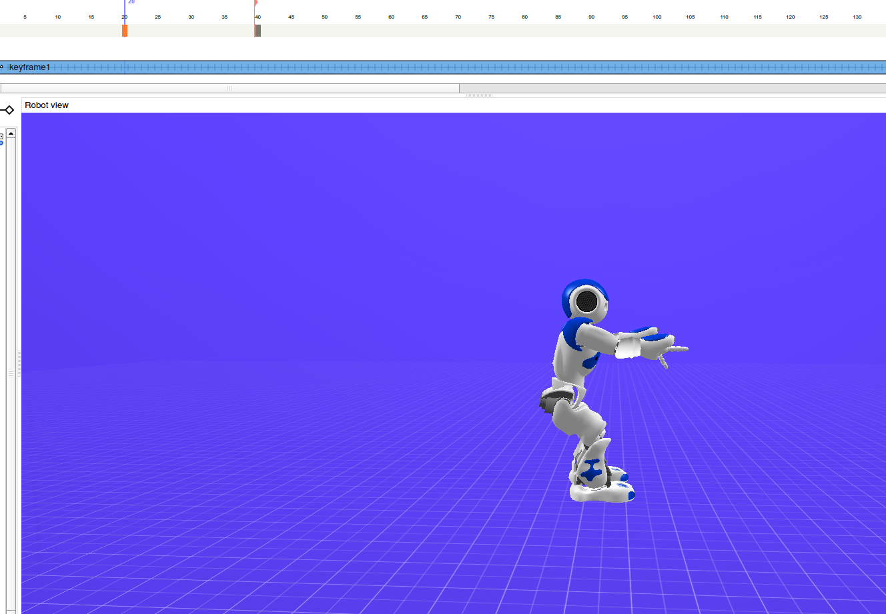
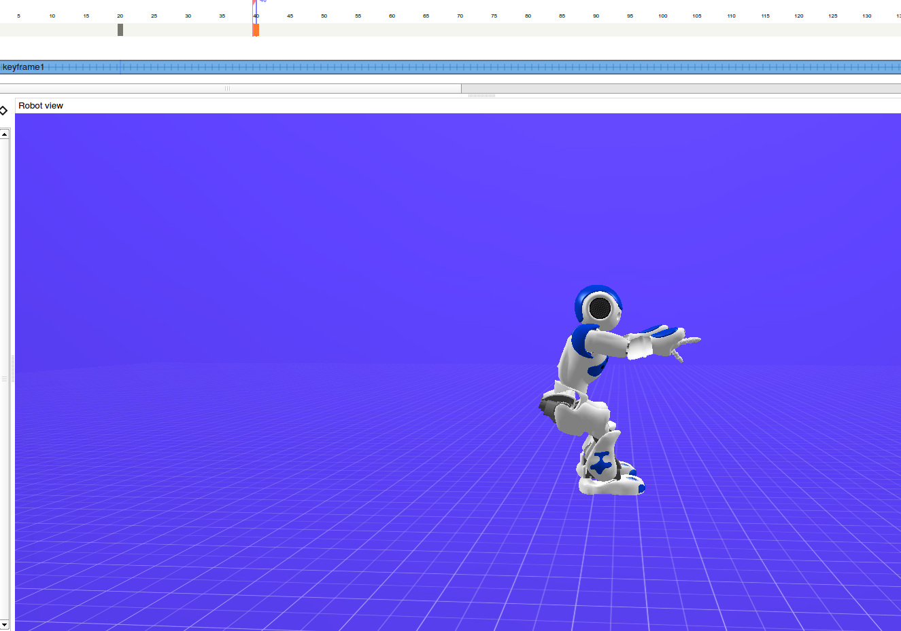

Opis wykonania
Generowanie liczby losowej i switch na jej podstawie
Wstawiłem element typu script i dodałem następujący kod:
def onInput_onStart(self):
nMax = 1
nMin = 0
self.output_RandomValue( random.randint( nMin, nMax ) )
Sprawia to, że na wyjście tego scryptu idzie wartość 0 lub 1 i w nasępnym kroku podpinam do niej switch-case'e i losuję ćwiczenie.
Instrukcja for
Aby wykonać pewne ćwiczenie określoną ilość razy wykorzystujemy instrukcję for.
Można ustalić parametry definiujące sposób zapętlania naciskając naciskając na nią prawym przyciskiem myszy i dająć "set parameters".
Timeline
Timeline służy do precyzyjnego definiowania kluczowych pozycji w których ma się znaleźć nasz robot. Definiujemy "klatki" i pozycje pomiędzy są interpolowane.
Przykład przedstawia dwie klatki z animacji schodzenia do przysiadu robota.


Chodzenie między stacjami
Do chodzenia między stacjami wykorzystałem prosty skrypt:
def onInput_onStart(self):
motion = ALProxy("ALMotion")
posture = ALProxy("ALRobotPosture")
posture.goToPosture("StandInit", 0.5)
motion.walkTo(0.5, 0.0, 0.0)
motion.waitUntilWalkIsFinished()
self.onStopped()
Robot przechodzi dzięki niemu z obecnej pozycji do pozycji (0.5, 0.0, 0.0).